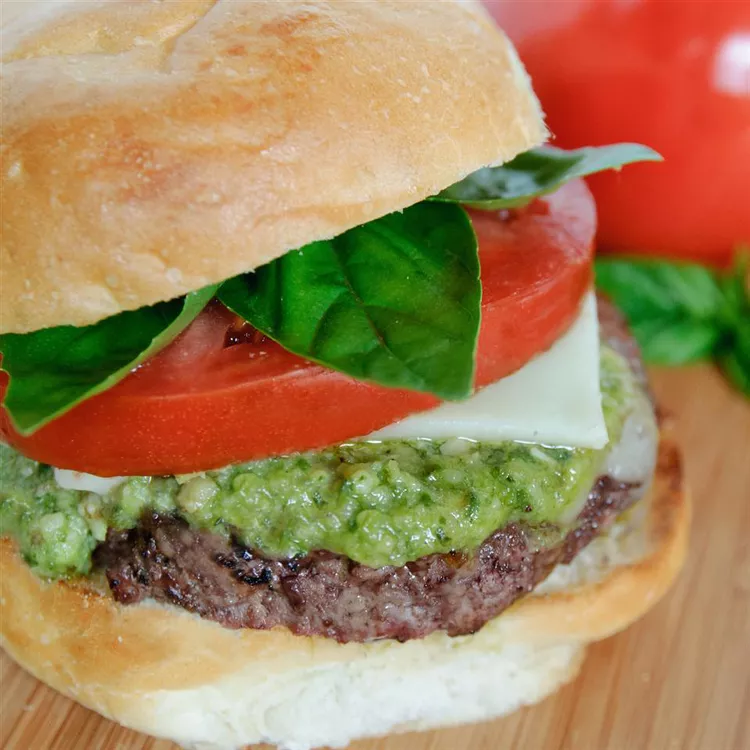

Caprese Burger

Description:
A burger based on Caprese salad
Ingredients:
- 1 tablespoon balsamic vinegar
- 1 tablespoon extra virgin olive oil
- salt and peper to taste
- 4 thick slices tomato
- 1 1/3 pounds lean ground beef
- 1 tablespoon tomato paste
- 1/4 cup chopped frash basil
- 1/4 cup grated Parmesan cheese
- 1 clove garlic, minced
- 1/4 teaspoon black pepper
- 4 ounces fresh mozzarella cheese, sliced
- 4 hamburger buns, split
Steps
-
Whisk balasamic vinegar, oil, salt and pepper in a small bowl. Pour over
tomato slices to marinate
-
Preheat an outdoor grill for medium-high heat and lightly oil the grate
-
Mix ground beef, tomato paste, basil, Parmesan cheese, garlic and 1/4
teaspoon pepper in a large bowl. Form beef mixture into 4 equal patties.
-
Cook on a preheated grill untill the burgers are cooked. Top each burger
with mozzarella cheese, allow to melt. Serve on hamburger buns with
marinated tomato slices.